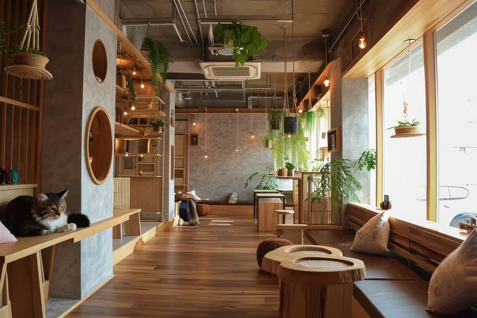

Two of your favorite, cozy things ♡

A local, small business in hopes of not only giving cats a new home, but as well as being a sanctuary where customers can come sip, play, and wind down from daily stress. Currently Kuro & Cream is only accepting appointments to enjoy time with the cats. Otherwise, we greatly welcome the public to stop by and grab a drink to-go, or enjoy, sit, and sip in our outdoor patio!